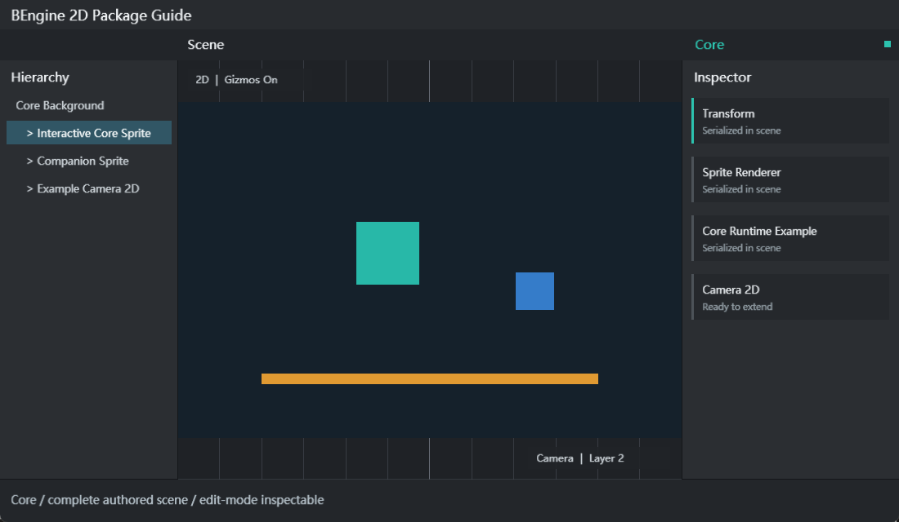

纯 2D 世界
位置和缩放使用 Vector2，旋转使用单一 Fix64 角度。Camera2D 仅支持正交投影。
CORE MANUAL
Core 是 BEngine 始终启用的 2D 基础层，负责 Scene、GameObject、Component、Transform、Camera2D、Sprite、粒子、资源、输入、序列化和编辑器扩展协议。
位置和缩放使用 Vector2，旋转使用单一 Fix64 角度。Camera2D 仅支持正交投影。
Play 在 Scene 镜像上运行；停止后直接丢弃镜像，编辑态 Scene 与组件资产不被运行时写回。
世界、粒子与 UI 按 Layer、Order、Hierarchy、透明度排序，Material、Shader、Atlas 决定合批。
包可注入 Scene System、菜单、Inspector、Drawer、资源类型和 Scene Picking Provider。

Core 不是可选扩展包，没有 `package.yaml`，无需在工程包清单中启用。可选包只允许依赖 Core，Core 不反向记录具体扩展包。
| 程序集/目录 | 职责 | 运行时 |
|---|---|---|
BEngine | 运行时对象、资源、渲染、输入、数学、Scene scope | 是 |
BEngine.Editor | 编辑器宿主、IMGUI、窗口、菜单、导入器、Package Manager | 否 |
BEngine.Launcher | 工程选择和启动 | 否 |
BEngine.Player | 导出游戏的通用宿主 | 是 |
Resources | 运行时默认 Shader 与资源 | 是 |
Editor | 图标、文档、示例、Skill | 否 |
运行时使用单线程 SceneRuntime。编辑器可在后台扫描、编译和读取文件，但 Scene、GameObject 与 Component 只能由主编辑循环修改。
| 示例 | 导入目录 | 场景 | 覆盖内容 |
|---|---|---|---|
| Core Getting Started | Assets/Examples/CoreGettingStarted | res/Core.scene.yaml | 生命周期、输入、协程、Transform、Sprite、Camera2D、EditorWindow |
示例不会自动进入工程。Package Manager 的 Import 会创建独立 Assets 目录；再次导入显示 Reimport，并按导入回执复用未修改文件。
Assets/Examples/CoreGettingStarted/res/Core.scene.yaml。| 组件 | 字段 | 说明 |
|---|---|---|
| Transform | localPosition/localRotation/localScale | 二维本地变换；世界值由父层级计算 |
| Transform | position/rotation/lossyScale | 世界值；使用 SetParent、SetSiblingIndex 管理层级 |
| Camera2D | size | 正交半高，最小 0.001 |
| Camera2D | backgroundColor/clearMode | Color、DepthOnly、Nothing |
| Camera2D | priority/isMain | 多相机按 priority 从小到大稳定渲染 |
| Camera2D | cullingMask/viewportRect | 独立 Layer 位掩码与左下角原点的归一化视口 |
| Renderer2D | sortingLayer/orderInLayer/opacity | 通用 2D 排序字段 |
| SpriteRenderer | sprite/size/pivot/useSpritePivot | Sprite 引用、尺寸和轴心 |
| SpriteRenderer | color/flipX/flipY/material | 视觉与批次资源 |
| ParticleSystem2D | duration/loop/playOnAwake/emissionRate | 播放与发射 |
| ParticleSystem2D | startLifetime/startSpeed/startDirection/startSize | 新粒子的基础状态 |
| ParticleSystem2D | startColor/startRotation/startAngularVelocity/maxParticles | 颜色、角运动与容量 |
Sorting Layer 使用连续自然编号 1..63，不是位值。工程默认提供五个具有稳定内建身份的 Layer；它们可以重命名和排序，但不能删除；自定义 Layer 可以增加、删除、重命名和排序。Camera 与 Physics 的 Layer Mask 是独立位掩码，应通过 SortingLayer.ToMask(layer)、LayerMask.MaskForLayer(layer) 或 LayerMask.GetMask(names) 创建，不要直接按位组合 Layer 编号。内建 UI Layer 通过稳定身份动态定位，不能依赖固定编号。
| 资源 | 字段/后缀 | 工作流 |
|---|---|---|
| Scene | *.scene.yaml | 保存 GameObject、Transform、Component；支持 Single/Additive |
| PrefabAsset | *.prefab.yaml | 实例化后可 Apply、Revert、Unpack |
| Sprite | PNG + .meta | 在 PNG Inspector 将 Texture Type 设为 Sprite 后 Apply；同一图片可赋给 SpriteRenderer 或加入 Atlas |
| TextureAtlas | MaxSize/Padding/Extrude/SpriteReferences | SpriteReferences 保存 Sprite GUID；在 Texture Atlas 窗口 Build |
| Material | shader/color/renderQueue | 保存 `.material.yaml` 和材质属性 |
| GUISkin | *.guiskin.yaml | 继承 BAsset；保存全部 EditorStyles 样式槽和 customStyles |
| TextureImporter | compressionFormat/filterMode/wrapMode | 写入源图旁 `.meta` |
| TextureImporter | generateMipMaps/maxTextureSize/pixelsPerUnit | 修改后点击 Apply；Revert 重新读 meta |
| BAsset | assetPath/guid | 加载后绑定稳定工程路径和 GUID |
| API | 用途 |
|---|---|
Scene.CreateGameObject | 在 Scene 创建对象 |
GameObject.AddComponent<T> | 添加组件并满足 RequireComponent |
GetComponent/TryGetComponent | 查询对象组件 |
Scene.QueryComponents<T> | 查询 Scene 中匹配组件 |
Transform.Translate/Rotate/SetParent | 2D 变换与层级 |
StartCoroutine/Invoke | 协程与延迟调用 |
BAsset.Load<T> | 按 Assets/Packages 路径加载资源 |
BAsset.LoadSubAsset<T>(path, localIdentifier) | 用主资源路径与局部 ID 加载 SubAsset |
SceneManager.LoadScene | Single 或 Additive 场景加载 |
using BEngine;
[AddComponentMenu("Gameplay/Player Mover")]
public sealed class PlayerMover : MonoBehaviour
{
public Fix64 speed = 4;
public override void Update()
{
var input = new Vector2(
Input.GetAxisRaw("Horizontal"),
Input.GetAxisRaw("Vertical"));
transform.Translate(input * speed * Time.deltaTime, Space.World);
}
}生命周期依次为 Awake、OnEnable、Start、FixedUpdate/Update/LateUpdate、OnDisable、OnDestroy。Runtime System 与脚本均在同一 SceneRuntime 线程串行执行。
| API/特性 | 注册与用途 |
|---|---|
[MenuItem] | 程序集加载后自动扫描；同路径 bool 方法作为验证函数 |
EditorWindow.GetWindow<T> | 创建或聚焦可停靠窗口 |
[CustomEditor] | 为 BObject 类型注册 Inspector |
[CustomPropertyDrawer] | 为类型或 PropertyAttribute 注册字段 Drawer |
SerializedObject/SerializedProperty | 多选、Undo 与统一字段访问；嵌套普通对象用 Foldout 和按深度缩进绘制 |
EditorGUI.ObjectField | BObject/BAsset 的选择、搜索和拖放 |
Undo.RecordObject + SetDirty | 记录编辑态变更并请求保存 |
AssetDatabase | 加载、创建、导入、刷新与保存资源 |
LoadAllAssetsAtPath / LoadAllAssetRepresentationsAtPath | 枚举主资源与 SubAsset，或只枚举 SubAsset 表示 |
AddObjectToAsset / RemoveObjectFromAsset | 向主资源添加或移除内嵌 SubAsset |
IsMainAsset / IsSubAsset | 判断对象是主资源还是 SubAsset |
TryGetGUIDAndLocalFileIdentifier | 取得主资源 GUID 与对象 localIdentifier |
ScenePickingProviderRegistry.Register | 外部 Renderer 参与 Scene 点选 |
GUI.skin | 当前 GUISkin；控件从对应命名槽解析默认 GUIStyle |
EditorAppearance.SetSkin | 应用全局 Skin，更新主题状态并重绘所有编辑器窗口 |
Project 窗口可在 One Column 与 Two Column 间切换。左侧目录分为 Assets 和 Packages 两个独立滚动区域；拖动两者之间的横向分隔线可调整下方 Packages 区域高度。该高度随编辑器布局保存，窗口缩小时会自动限制，确保上下区域都可继续操作。
Two Column 模式右侧以网格显示当前文件夹的直接子项。文件与文件夹名称均相对缩略图水平居中；长名称限制在单元内并以省略号显示，完整名称保留在 Tooltip 中。文件标签隐藏最后一段后缀：Spark.png 显示为 Spark，Showcase.atlas.yaml 显示为 Showcase.atlas；磁盘文件名和资源路径不变。
Project 与 Hierarchy 只有在鼠标于同一 TreeView 行按下并抬起时才提交 Selection。按下后移出该行或开始拖拽会取消该次点击，因此可把 BObject 直接拖到未锁定 Inspector 的 ObjectField，而不会先切换 Inspector 目标。拖拽期间使用拖拽光标；ObjectField 仍执行目标类型与 allowSceneObjects 校验。
文本输入框按系统键盘节奏重复处理长按 Backspace、Delete、左右方向键、Home 和 End。首次按下立即执行，系统延迟后连续执行；按键抬起或输入框失焦时停止。
SubAsset 由“主资源 GUID + 非零 localIdentifier”唯一标识，主资源的 localIdentifier 为 0。BAsset 子资源引用序列化为 guid:<主资源 GUID>#subasset=<localIdentifier>，因此主资源移动或重命名不会破坏引用。TryGetGUIDAndLocalFileIdentifier 返回该身份；LoadAllAssetsAtPath 返回主资源和全部表示，LoadAllAssetRepresentationsAtPath 只返回 SubAsset。
用 AssetDatabase.AddObjectToAsset(objectToAdd, mainAssetOrPath) 创建内嵌 SubAsset，用 RemoveObjectFromAsset 移除。SubAsset 不能再拥有子资源，由 Importer 管理的 Sprite 等表示不能手动移除。Project 默认隐藏 SubAsset，可通过 ObjectField、Inspector 和枚举 API 访问。
Preferences 与 Project Settings 是普通、可持久化布局的 EditorWindow，可以像 Scene、Inspector 一样停靠、拖出和重新停靠；重复打开菜单会聚焦已有窗口。Float 使用独立原生窗口，可以跨显示器移动并拖回主窗口 Dock；显示器拓扑变化后会恢复离屏窗口。Float 内的 Popup 保持在所属窗口，未聚焦 Float 降频绘制，最小化时停止 GPU 提交。Preferences > General 的 Editor Scale 使用带精确数值输入的 Slider，范围为 0.5–1.8。
GUISkin 位于 BEngine.Editor，继承 BAsset。Preferences 创建的自定义主题以 *.guiskin.yaml 保存在 Output/EditorData/Preferences/Themes。Skin 直接持有完整的 EditorStyles 样式集合和可扩展的 customStyles，不存在独立的 SkinColors/Palette。
Output/EditorData/Preferences/Themes 生成名称唯一的 *.guiskin.yaml。customStyles 并 Apply；背景图片通过 Texture ObjectField 设置。自定义 Skin 可一键套用 Light、Dark 或 Classic。GUIStyle 保存 Normal、Hover、Active、Focused、On 和 Disabled 状态的文字色、背景色、边框色、背景图片，以及尺寸、对齐、换行和拉伸参数。GUI、EditorGUI、GUILayout、EditorGUILayout、EditorToolbar 的绘制重载均可接收 GUIStyle?：具体样式覆盖主题，null 按控件语义回退到当前 GUI.skin 槽。
var skin = AssetDatabase.LoadAssetAtPath<GUISkin>(
"Assets/Editor/Studio.guiskin.yaml");
if (skin is not null)
EditorAppearance.SetSkin(skin);
GUI.Button(rect, new GUIContent("Run"), style: null);
var accent = GUI.skin.FindStyle("MyPackage/AccentButton")
?? GUI.skin.button;
GUILayout.Button("Build", accent);null 会随当前主题变化，例如 Button 使用 GUI.skin.button、TextField 使用 GUI.skin.textField、工具栏按钮使用 GUI.skin.toolbarButton。扩展窗口优先使用这种回退；仅在确有独立视觉语义时添加 customStyles。直接设置 GUI.skin 适合底层宿主或测试，普通编辑器工具应调用 EditorAppearance.SetSkin 以触发全局重绘。Assets/Scenes。using BEngine;
using BEngine.Editor;
public sealed class SelectionInfoWindow : EditorWindow
{
[MenuItem("Tools/My Package/Selection Info")]
private static void Open() =>
GetWindow<SelectionInfoWindow>("Selection Info");
protected override void OnEnable() =>
Selection.selectionChanged += Repaint;
protected override void OnDisable() =>
Selection.selectionChanged -= Repaint;
protected override void OnGUI() =>
EditorGUILayout.LabelField(
Selection.activeObject?.name ?? "None");
}脚本必须放在 Editor 程序集；[MenuItem] 是注册入口，无需手工初始化。
using BEngine;
using BEngine.DependencyInjection;
using Microsoft.Extensions.DependencyInjection;
using Microsoft.Extensions.DependencyInjection.Extensions;
public sealed class PulseSystem : ISceneRuntimeSystem
{
public string packageId => "com.example.pulse";
public int order => 200;
public void Update(Scene scene, Fix64 deltaTime)
{
foreach (var pulse in scene.QueryComponents<PulseComponent>())
pulse.Tick(deltaTime);
}
}
public sealed class PulseComponent : MonoBehaviour
{
public void Tick(Fix64 deltaTime) =>
transform.Rotate(deltaTime * 30);
}
public sealed class PulseModule : IEngineServiceModule
{
public void ConfigureServices(
IServiceCollection services, EngineServiceContext context) =>
services.TryAddEnumerable(
ServiceDescriptor.Transient<ISceneRuntimeSystem, PulseSystem>());
}IEngineServiceModule 由包程序集自动发现；包禁用时 Provider 和 Scene scope 会释放。
| 现象 | 检查顺序 |
|---|---|
| Game 无画面 | Camera2D enabled → cullingMask → viewportRect → Transform 范围 → clearMode |
| Scene 可见、Game 不可见 | Renderer sortingLayer 是否被 Camera 收集，opacity 是否为 0 |
| Sprite 只显示纯色 | 图片 Texture Type = Sprite 已 Apply → 源图 meta → Atlas Build；Sprite 为空时纯色 Quad 正常 |
| 不能合批 | Material、Shader、解析 Atlas 必须相同，且排序后相邻 |
| Texture 设置丢失 | 点击 Apply，确认 `.meta` 可写，再 Reimport 查看 Console |
| Play 停止后对象消失 | Play 创建对象属于镜像，这是预期行为 |
| Play 变更写入 Scene | 记录日志并检查自定义 Editor 是否直接写 YAML；运行时不应保存 |
| 菜单/Drawer 不出现 | 确认代码在 Editor 程序集、无编译错误、包已启用 |
| 示例 Import 禁用 | 退出 Play、等待编译和包切换结束 |
| Example/Editor 启动失败 | 从 Hub 启动时等待 Editor 首帧 Ready；托管失败、原生崩溃、提前退出或超时均由 Hub 弹窗并显示实际日志。直接运行 Editor 时，可捕获的启动异常由 Editor 原生弹窗报告 |
Focus；实际窗口聚焦在首帧后完成。可捕获的 Editor 启动异常记录到 Output/EditorData/Logs/EditorBootstrap.log；Editor 来不及记录的原生崩溃或启动超时由 Hub 记录到 Output/EditorData/Logs/EditorStartup.log。故障弹窗会给出本次诊断实际使用的日志路径。旧项目中的 *.sprite.yaml 只保留读取兼容；新内容直接通过图片的 Texture Import Settings 定义 Sprite。